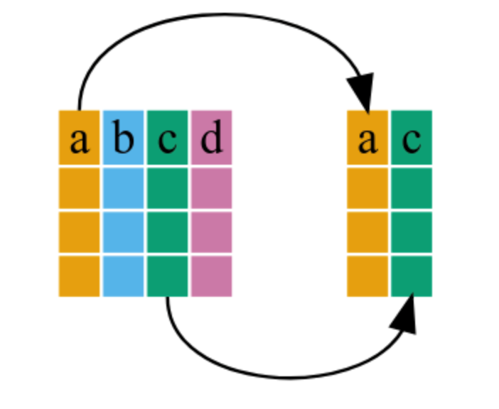
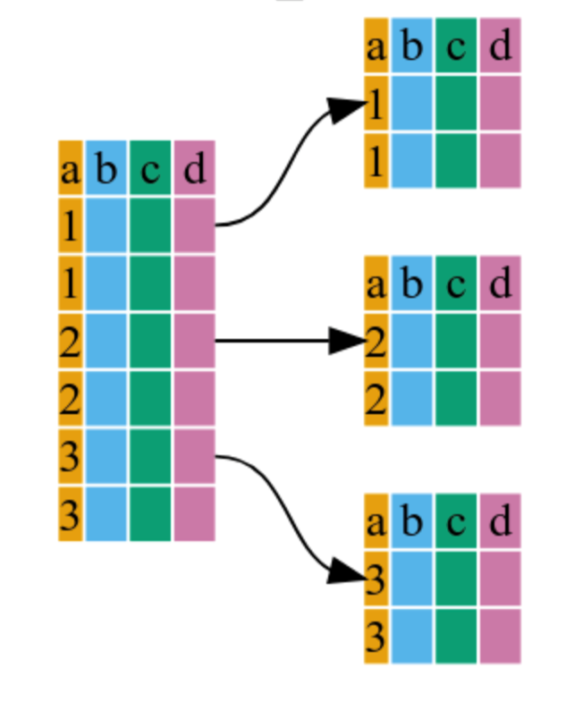
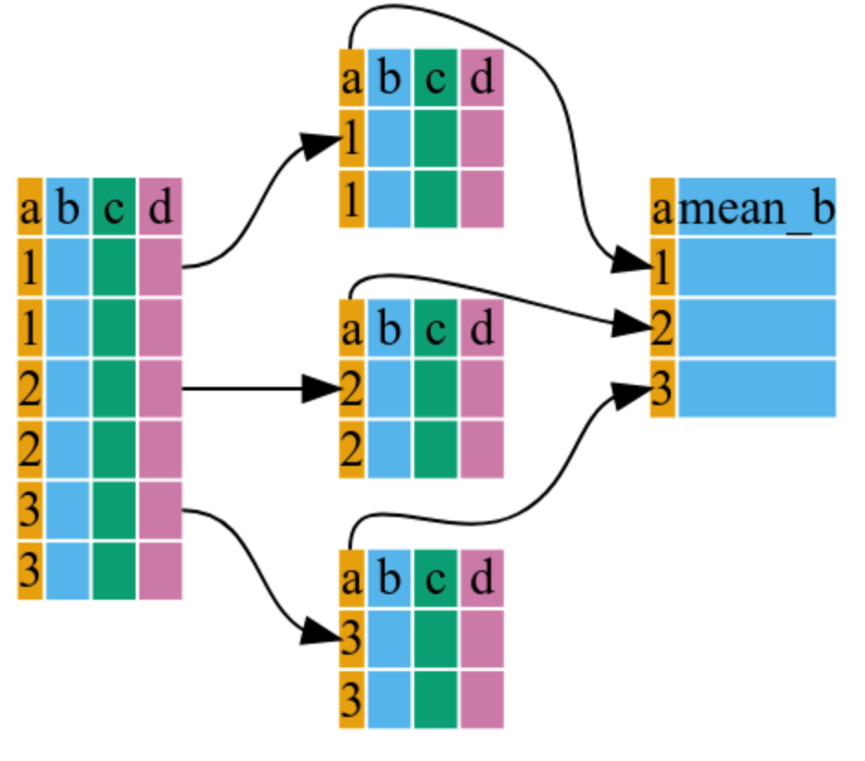

6 Advanced data manipulation
Learning objectives
- Become familiar with the
dplyrsyntax - Create pipes with the operator %>%
- Perform operations on data frames using dplyr and tidyr functions
- Implement functions from other external packages
There are several packages that allow for more sophisticated processing operations to be done faster. We will take a look at some functions from one of them. I encourage you to look into plyr and tidyr after this workshop.
6.1 Manipulation with dplyr
We often need to select certain observations (rows) or variables (columns), or group the data by certain variable(s) to calculate some summary statistics. Although these operations can be done using base R functions, they require the creation of multiple intermediate objects and a lot of code repetition. There are two packages that provide functions to streamline common operations on tabular data and make the code look nicer and cleaner.
These packages are part of a broader family called tidyverse, for more information you can visit https://www.tidyverse.org/.
We will cover 5 of the most commonly used functions and combine them using pipes (%>%):
1. select() - used to extract data
2. filter() - to filter entries using logical vectors
3. group_by() - to solve the split-apply-combine problem
4. summarize() - to obtain summary statistics
5. mutate() - to create new columns
6.1.1 Introducing pipes
## # A tibble: 6 × 6
## country continent year lifeExp pop gdpPercap
## <fct> <fct> <int> <dbl> <int> <dbl>
## 1 Afghanistan Asia 1952 28.8 8425333 779.
## 2 Afghanistan Asia 1957 30.3 9240934 821.
## 3 Afghanistan Asia 1962 32.0 10267083 853.
## 4 Afghanistan Asia 1967 34.0 11537966 836.
## 5 Afghanistan Asia 1972 36.1 13079460 740.
## 6 Afghanistan Asia 1977 38.4 14880372 786.## # A tibble: 6 × 6
## country continent year lifeExp pop gdpPercap
## <fct> <fct> <int> <dbl> <int> <dbl>
## 1 Zimbabwe Africa 1982 60.4 7636524 789.
## 2 Zimbabwe Africa 1987 62.4 9216418 706.
## 3 Zimbabwe Africa 1992 60.4 10704340 693.
## 4 Zimbabwe Africa 1997 46.8 11404948 792.
## 5 Zimbabwe Africa 2002 40.0 11926563 672.
## 6 Zimbabwe Africa 2007 43.5 12311143 470.6.1.2 Using select()

To subset a data frame
## # A tibble: 6 × 3
## year country gdpPercap
## <int> <fct> <dbl>
## 1 1952 Afghanistan 779.
## 2 1957 Afghanistan 821.
## 3 1962 Afghanistan 853.
## 4 1967 Afghanistan 836.
## 5 1972 Afghanistan 740.
## 6 1977 Afghanistan 786.To remove columns
## # A tibble: 6 × 5
## country year lifeExp pop gdpPercap
## <fct> <int> <dbl> <int> <dbl>
## 1 Afghanistan 1952 28.8 8425333 779.
## 2 Afghanistan 1957 30.3 9240934 821.
## 3 Afghanistan 1962 32.0 10267083 853.
## 4 Afghanistan 1967 34.0 11537966 836.
## 5 Afghanistan 1972 36.1 13079460 740.
## 6 Afghanistan 1977 38.4 14880372 786.## # A tibble: 6 × 3
## year country gdpPercap
## <int> <fct> <dbl>
## 1 1952 Afghanistan 779.
## 2 1957 Afghanistan 821.
## 3 1962 Afghanistan 853.
## 4 1967 Afghanistan 836.
## 5 1972 Afghanistan 740.
## 6 1977 Afghanistan 786.6.1.3 Using filter()
Include only European countries and select the columns year, country and gdpPercap
gapminder %>%
dplyr::filter(continent == "Europe") %>%
dplyr::select(year, country, gdpPercap) %>%
head()## # A tibble: 6 × 3
## year country gdpPercap
## <int> <fct> <dbl>
## 1 1952 Albania 1601.
## 2 1957 Albania 1942.
## 3 1962 Albania 2313.
## 4 1967 Albania 2760.
## 5 1972 Albania 3313.
## 6 1977 Albania 3533.Using multiple filters at once
gapminder %>%
dplyr::filter(continent == "Europe", year == 2007) %>%
dplyr::select(country, lifeExp)## # A tibble: 30 × 2
## country lifeExp
## <fct> <dbl>
## 1 Albania 76.4
## 2 Austria 79.8
## 3 Belgium 79.4
## 4 Bosnia and Herzegovina 74.9
## 5 Bulgaria 73.0
## 6 Croatia 75.7
## 7 Czech Republic 76.5
## 8 Denmark 78.3
## 9 Finland 79.3
## 10 France 80.7
## # ℹ 20 more rowsExtract unique entries
## # A tibble: 142 × 2
## country continent
## <fct> <fct>
## 1 Afghanistan Asia
## 2 Albania Europe
## 3 Algeria Africa
## 4 Angola Africa
## 5 Argentina Americas
## 6 Australia Oceania
## 7 Austria Europe
## 8 Bahrain Asia
## 9 Bangladesh Asia
## 10 Belgium Europe
## # ℹ 132 more rowsOrder according to a column
## # A tibble: 6 × 4
## country continent year pop
## <fct> <fct> <int> <int>
## 1 China Asia 2007 1318683096
## 2 China Asia 2002 1280400000
## 3 China Asia 1997 1230075000
## 4 China Asia 1992 1164970000
## 5 India Asia 2007 1110396331
## 6 China Asia 1987 10840350006.1.4 Using group_by()

It internally groups observations based on the specified variable(s)
## tibble [1,704 × 6] (S3: tbl_df/tbl/data.frame)
## $ country : Factor w/ 142 levels "Afghanistan",..: 1 1 1 1 1 1 1 1 1 1 ...
## $ continent: Factor w/ 5 levels "Africa","Americas",..: 3 3 3 3 3 3 3 3 3 3 ...
## $ year : int [1:1704] 1952 1957 1962 1967 1972 1977 1982 1987 1992 1997 ...
## $ lifeExp : num [1:1704] 28.8 30.3 32 34 36.1 ...
## $ pop : int [1:1704] 8425333 9240934 10267083 11537966 13079460 14880372 12881816 13867957 16317921 22227415 ...
## $ gdpPercap: num [1:1704] 779 821 853 836 740 ...## gropd_df [1,704 × 6] (S3: grouped_df/tbl_df/tbl/data.frame)
## $ country : Factor w/ 142 levels "Afghanistan",..: 1 1 1 1 1 1 1 1 1 1 ...
## $ continent: Factor w/ 5 levels "Africa","Americas",..: 3 3 3 3 3 3 3 3 3 3 ...
## $ year : int [1:1704] 1952 1957 1962 1967 1972 1977 1982 1987 1992 1997 ...
## $ lifeExp : num [1:1704] 28.8 30.3 32 34 36.1 ...
## $ pop : int [1:1704] 8425333 9240934 10267083 11537966 13079460 14880372 12881816 13867957 16317921 22227415 ...
## $ gdpPercap: num [1:1704] 779 821 853 836 740 ...
## - attr(*, "groups")= tibble [5 × 2] (S3: tbl_df/tbl/data.frame)
## ..$ continent: Factor w/ 5 levels "Africa","Americas",..: 1 2 3 4 5
## ..$ .rows : list<int> [1:5]
## .. ..$ : int [1:624] 25 26 27 28 29 30 31 32 33 34 ...
## .. ..$ : int [1:300] 49 50 51 52 53 54 55 56 57 58 ...
## .. ..$ : int [1:396] 1 2 3 4 5 6 7 8 9 10 ...
## .. ..$ : int [1:360] 13 14 15 16 17 18 19 20 21 22 ...
## .. ..$ : int [1:24] 61 62 63 64 65 66 67 68 69 70 ...
## .. ..@ ptype: int(0)
## ..- attr(*, ".drop")= logi TRUE6.1.5 Using summarize()

gdp_c <- gapminder %>%
dplyr::group_by(continent) %>%
dplyr::summarize(mean_gdpPercap = mean(gdpPercap))
gdp_c## # A tibble: 5 × 2
## continent mean_gdpPercap
## <fct> <dbl>
## 1 Africa 2194.
## 2 Americas 7136.
## 3 Asia 7902.
## 4 Europe 14469.
## 5 Oceania 18622.Combine multiple summary statistics
gapminder %>%
dplyr::group_by(continent) %>%
dplyr::summarize(mean_le = mean(lifeExp),
min_le = min(lifeExp),
max_le = max(lifeExp),
se_le = sd(lifeExp)/sqrt(dplyr::n()))## # A tibble: 5 × 5
## continent mean_le min_le max_le se_le
## <fct> <dbl> <dbl> <dbl> <dbl>
## 1 Africa 48.9 23.6 76.4 0.366
## 2 Americas 64.7 37.6 80.7 0.540
## 3 Asia 60.1 28.8 82.6 0.596
## 4 Europe 71.9 43.6 81.8 0.286
## 5 Oceania 74.3 69.1 81.2 0.7756.1.6 Using mutate()
## # A tibble: 1,704 × 7
## country continent year lifeExp pop gdpPercap gdp_billion
## <fct> <fct> <int> <dbl> <int> <dbl> <dbl>
## 1 Afghanistan Asia 1952 28.8 8425333 779. 6.57
## 2 Afghanistan Asia 1957 30.3 9240934 821. 7.59
## 3 Afghanistan Asia 1962 32.0 10267083 853. 8.76
## 4 Afghanistan Asia 1967 34.0 11537966 836. 9.65
## 5 Afghanistan Asia 1972 36.1 13079460 740. 9.68
## 6 Afghanistan Asia 1977 38.4 14880372 786. 11.7
## 7 Afghanistan Asia 1982 39.9 12881816 978. 12.6
## 8 Afghanistan Asia 1987 40.8 13867957 852. 11.8
## 9 Afghanistan Asia 1992 41.7 16317921 649. 10.6
## 10 Afghanistan Asia 1997 41.8 22227415 635. 14.1
## # ℹ 1,694 more rows6.1.7 Putting them all together
gdp_pop_ext <-gapminder %>%
dplyr::mutate(gdp_billion = gdpPercap*pop/10^9) %>%
dplyr::group_by(continent,year) %>%
dplyr::summarize(mean_gdpPercap = mean(gdpPercap),
sd_gdpPercap = sd(gdpPercap),
mean_pop = mean(pop),
sd_pop = sd(pop),
mean_gdp_billion = mean(gdp_billion),
sd_gdp_billion = sd(gdp_billion)) ## `summarise()` has grouped output by 'continent'. You can override using the `.groups` argument.## # A tibble: 60 × 8
## # Groups: continent [5]
## continent year mean_gdpPercap sd_gdpPercap mean_pop sd_pop mean_gdp_billion sd_gdp_billion
## <fct> <int> <dbl> <dbl> <dbl> <dbl> <dbl> <dbl>
## 1 Africa 1952 1253. 983. 4570010. 6317450. 5.99 11.4
## 2 Africa 1957 1385. 1135. 5093033. 7076042. 7.36 14.5
## 3 Africa 1962 1598. 1462. 5702247. 7957545. 8.78 17.2
## 4 Africa 1967 2050. 2848. 6447875. 8985505. 11.4 23.2
## 5 Africa 1972 2340. 3287. 7305376. 10130833. 15.1 30.4
## 6 Africa 1977 2586. 4142. 8328097. 11585184. 18.7 38.1
## 7 Africa 1982 2482. 3243. 9602857. 13456243. 22.0 46.6
## 8 Africa 1987 2283. 2567. 11054502. 15277484. 24.1 51.4
## 9 Africa 1992 2282. 2644. 12674645. 17562719. 26.3 55.1
## 10 Africa 1997 2379. 2821. 14304480. 19873013. 30.0 63.0
## # ℹ 50 more rows6.2 Hands-on advanced data manipulation
- Write one command (it can span multiple lines) using pipes that will output a data frame that has only the columns
lifeExp,countryandyearfor the records before the year 2000 from African countries, but not for other Continents.
- Calculate the average life expectancy per country. Which country has the longest average life expectancy and which one the shortest average life expectancy?
- In the previous hands-on you discovered that all the entries from 2007 are actually from 2008. Write a command to edit the data accordingly using pipes. In the same command filter only the entries from 2008 to verify the change.